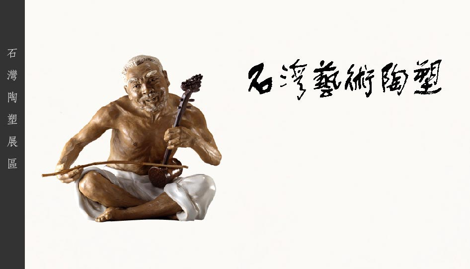
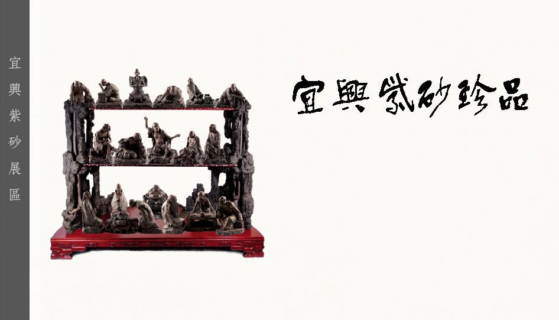
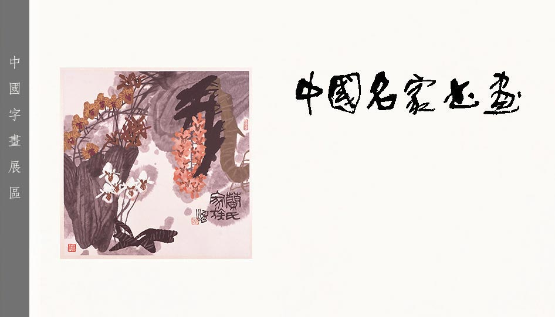

關於陶陶居
空中博物館
聯絡我們
陶陶居的故事陶陶居的故事陶陶居的故事陶陶居的故事陶陶居的故事陶陶居 的故事陶陶居的故事陶陶居的故事陶陶居的故事陶陶居的故事陶陶居的故事 陶陶居的故事陶陶居的故事陶陶居的故事陶陶居的故事陶陶居
廖洪標大師九十年代作品一覽

陶陶居的故事陶陶居的故事陶陶居的故事陶陶居的故事陶陶居的故事陶陶居 的故事陶陶居的故事陶陶居的故事陶陶居的故事陶陶居的故事陶陶居的故事 陶陶居的故事陶陶居的故事陶陶居的故事陶陶居的故事陶陶居
徐秀棠大師九十年代作品一覽

陶陶居的故事陶陶居的故事陶陶居的故事陶陶居的故事陶陶居的故事陶陶居 的故事陶陶居的故事陶陶居的故事陶陶居的故事陶陶居的故事陶陶居的故事 陶陶居的故事陶陶居的故事陶陶居的故事陶陶居的故事陶陶居
尚濤大師作品一覽
古詩今畫集作品一覽
